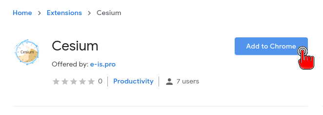
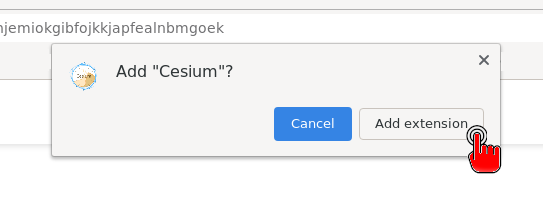
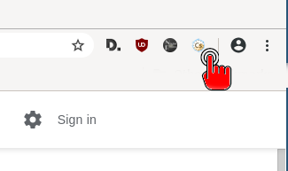

Installer Cesium dans Chromium/Chrome
Ce tutoriel vous explique comment installer Cesium comme extension de navigateur pour Chromium/Chrome.
Vous utiliserez Cesium dans le navigateur, mais pas sur un site web. Tout se passera dans votre ordinateur !
- Ouvrez Chromium/Chrome et rendez-vous sur la page de téléchargement
- Cliquez sur : Chromium/Chrome Add-on > Télécharger
- Cliquez sur "Add to Chrome", "Ajouter à Chrome".

- Acceptez l'installation avec "Add extension", "Ajouter l'extension".

- Et voilà ! Pour lancer Cesium, cliquez sur le logo Cesium en haut à droite.
